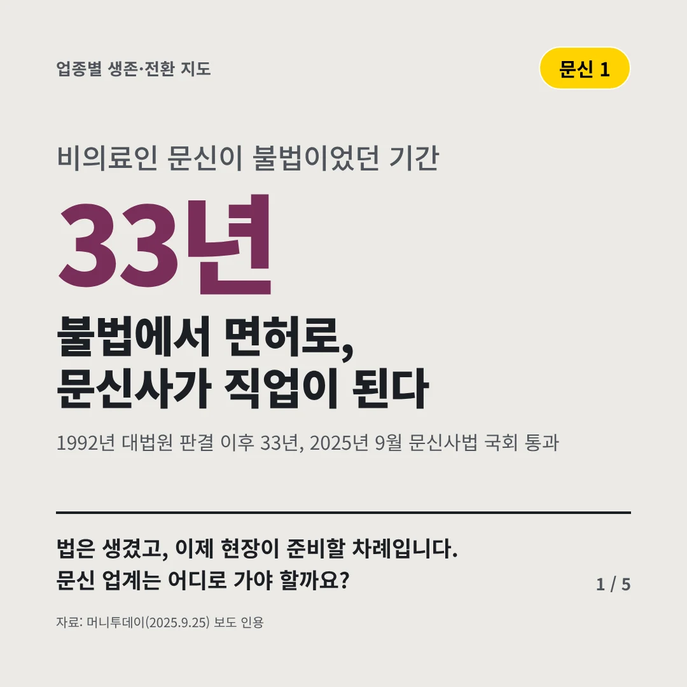
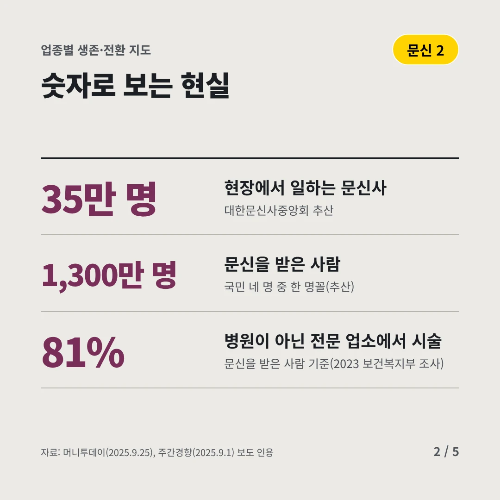
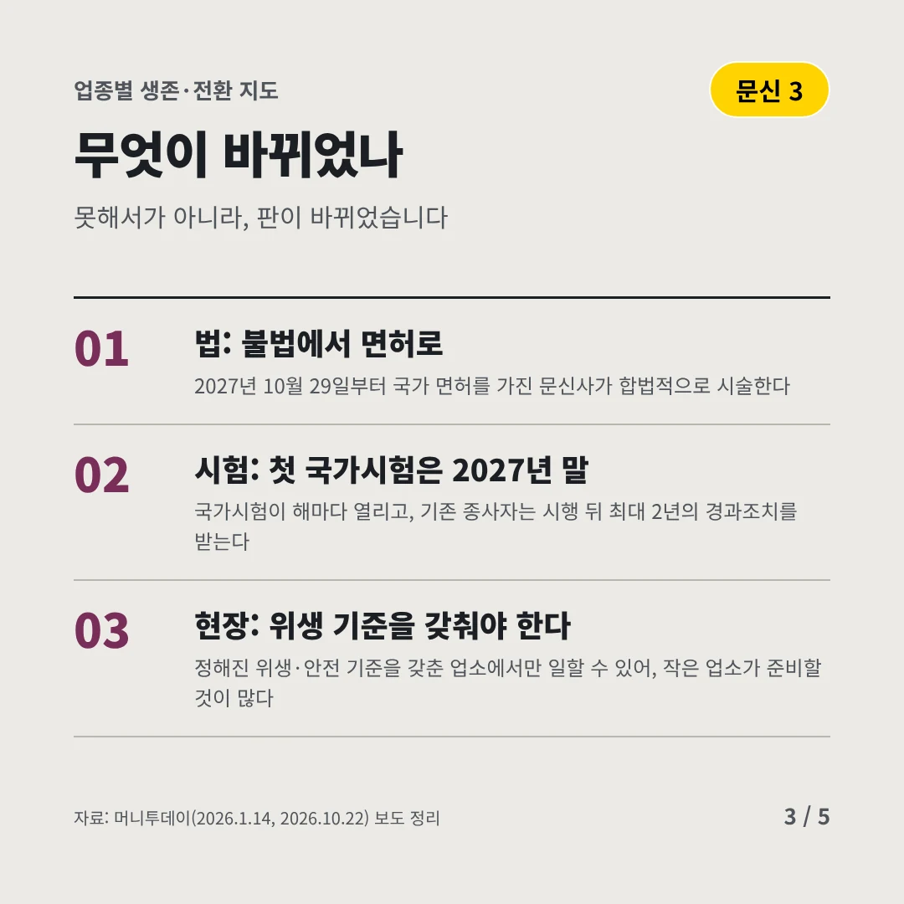
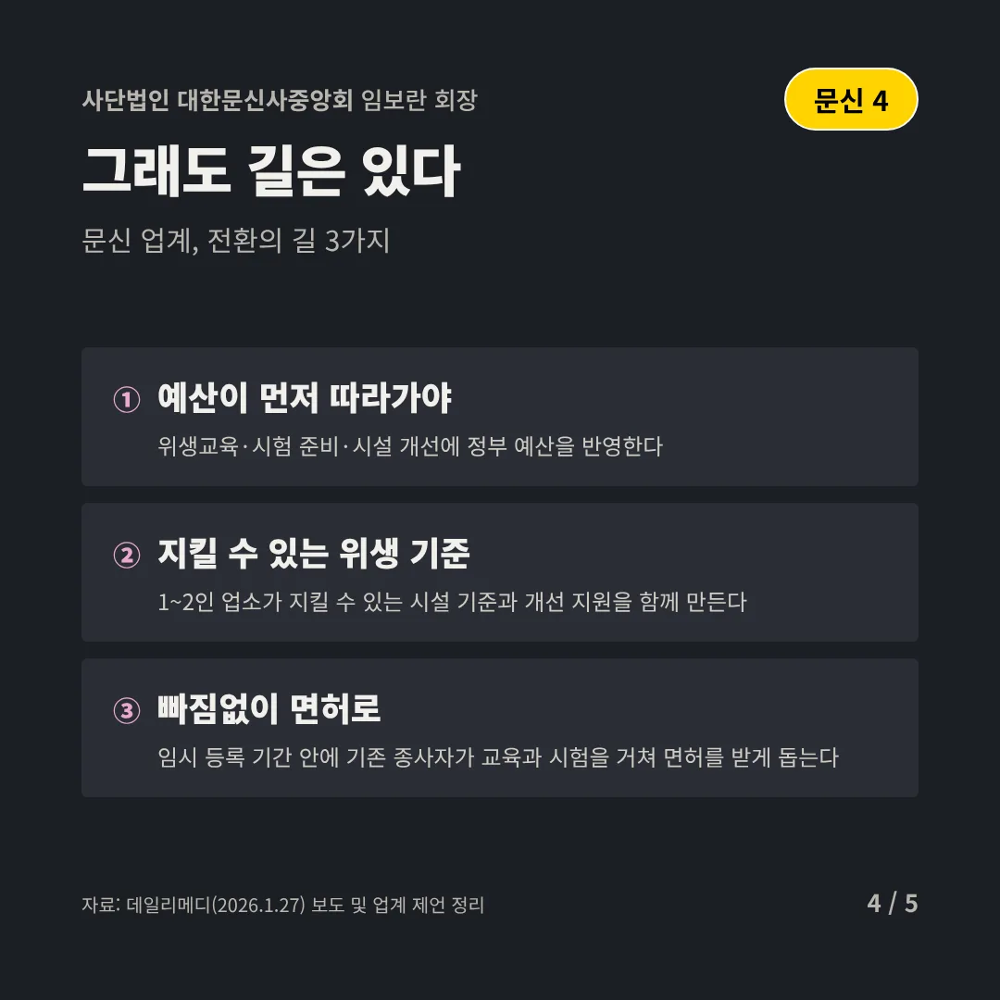
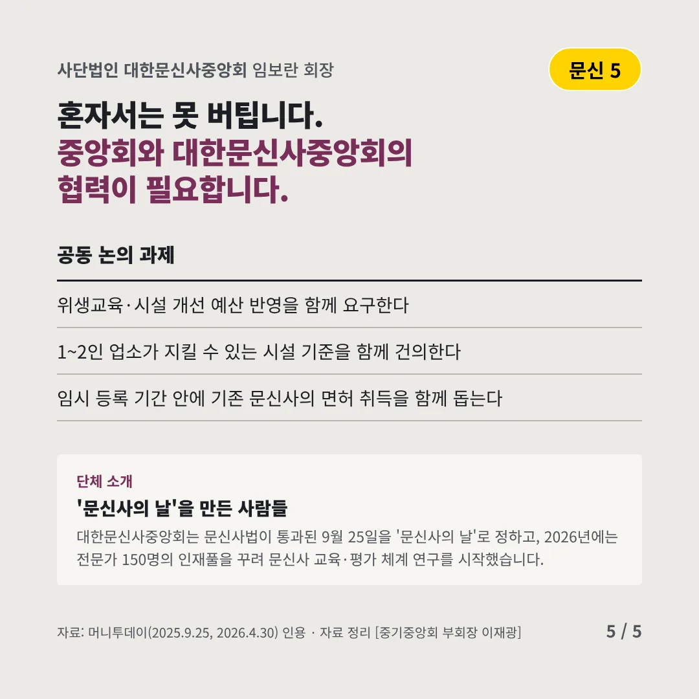
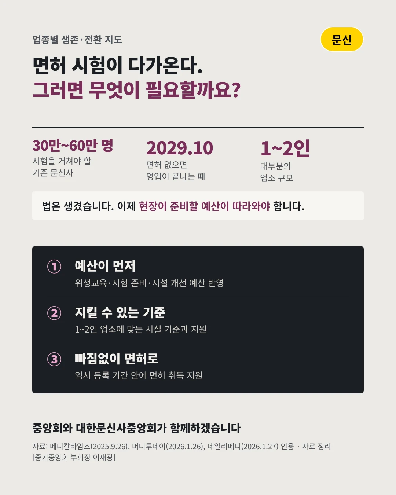

사단법인 대한문신사중앙회
불법에서 면허로, 문신사가 직업이 된다
33년 비의료인 문신이 불법이었던 기간






법은 생겼고, 이제 현장이 준비할 차례입니다. 문신 업계는 어디로 가야 할까요?
숫자로 보는 현실
- 35만 명현장에서 일하는 문신사대한문신사중앙회 추산
- 1,300만 명문신을 받은 사람국민 네 명 중 한 명꼴(추산)
- 81%병원이 아닌 전문 업소에서 시술문신을 받은 사람 기준(2023 보건복지부 조사)
무엇이 바뀌었나
- 법: 불법에서 면허로2027년 10월 29일부터 국가 면허를 가진 문신사가 합법적으로 시술한다
- 시험: 첫 국가시험은 2027년 말국가시험이 해마다 열리고, 기존 종사자는 시행 뒤 최대 2년의 경과조치를 받는다
- 현장: 위생 기준을 갖춰야 한다정해진 위생·안전 기준을 갖춘 업소에서만 일할 수 있어, 작은 업소가 준비할 것이 많다
그래도 길은 있다
- 35만 명이 빠짐없이 면허로경과조치 기간 안에 기존 종사자가 교육과 시험을 거쳐 면허를 받도록 돕는다
- 위생 기준을 함께 갖춘다1인·소규모 업소가 시설 기준을 맞추도록 위생 교육과 시설 개선을 지원한다
- K-타투를 산업으로문신업을 정식 서비스업으로 키우고, 한국 문신사의 기술을 해외로 넓힌다
한 장 요약

단체 소개
대한문신사중앙회는 문신사법이 통과된 9월 25일을 '문신사의 날'로 정하고, 2026년에는 전문가 150명의 인재풀을 꾸려 문신사 교육·평가 체계 연구를 시작했습니다.
자료: 머니투데이(2025.9.25), 주간경향(2025.9.1), 머니투데이(2026.1.14, 2026.10.22), 머니투데이(2026.4.30)